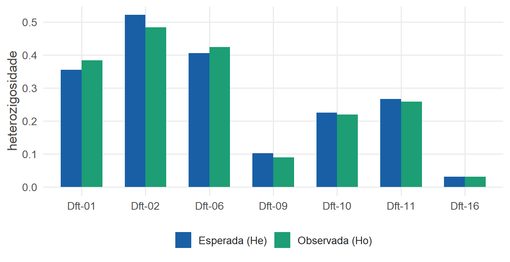
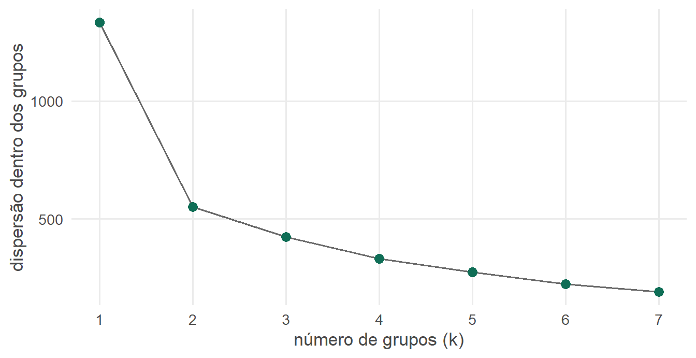

Reconstruindo a história de populações com dados genéticos
Doutorado em Ciências (USP) · clustering, simulação bayesiana, PCA e dados geoespaciais
NoteResumo executivo
A partir de amostras genéticas coletadas em 41 pontos ao longo da Mata Atlântica, precisei responder a duas perguntas: essas populações formam um grupo só ou vários? E como o tamanho delas mudou ao longo do tempo? Para isso, limpei e integrei três tipos de dados diferentes, usei clustering para procurar grupos, testes de hipótese para separar sinal de ruído e modelagem por simulação (1 milhão de cenários) para estimar a história mais provável. As mesmas etapas — preparar dados, escolher o método certo, validar e comunicar — sustentam qualquer boa análise de negócio.
O contexto
Numa pesquisa de doutorado, investiguei a história evolutiva de duas aves da Mata Atlântica (Dendrocincla turdina e Drymophila squamata) a partir do DNA de indivíduos coletados em campo e em coleções de museus. A pergunta científica era de evolução; o trabalho, do começo ao fim, era de dados.
A pergunta de negócio (traduzida)
Dado um conjunto grande de medições espalhadas geograficamente, existem subgrupos distintos na população — ou é tudo um grupo só? E o que os dados dizem sobre como esse “tamanho de base” cresceu ou encolheu no tempo?
É exatamente o tipo de pergunta de segmentação e de análise de tendência que aparece o tempo todo fora da academia.
Os dados
41 localidades georreferenciadas (4 estados + Paraguai)
141 indivíduos analisados (campo + coleções de museus)
3 tipos de marcador integrados: 8 microssatélites, 1 gene mitocondrial (ND2) e 1 íntron nuclear (FIB7)
Fontes heterogêneas reunidas, limpas e padronizadas antes de qualquer análise
Organização e cruzamento das planilhas de amostras em Excel antes da análise em R
O mapa abaixo é gerado em R, a partir das coordenadas reais das coletas — um exemplo de dado geoespacial pronto para análise:
ver código R
pal <-colorFactor(palette =c("#0f6e56", "#1d9e75", "#185fa5", "#ba7517", "#993c1d", "#534ab7"),domain = loc$estado)leaflet(loc) |>addProviderTiles("CartoDB.Positron") |>addCircleMarkers(~lng, ~lat, radius =6, color =~pal(estado),stroke =FALSE, fillOpacity =0.85,label =~paste0(localidade, " — ", estado) ) |>addLegend("bottomright", pal = pal, values =~estado, title ="Estado", opacity =1)
As 41 localidades de coleta ao longo da Mata Atlântica. Passe o mouse para ver o nome.
Dos métodos científicos às habilidades de mercado
Cada técnica usada na tese tem um nome de mercado bem reconhecível:
Na tese (linguagem científica)
Como habilidade de dados
Excel
Funções para manipulação e organização dos dados
STRUCTURE + método de Evanno
Clustering não-supervisionado e escolha do nº de grupos
ABC / DIYABC — 1 milhão de simulações
Modelagem por simulação Monte Carlo e inferência bayesiana
BEAST + Tracer (skyline plot)
MCMC e diagnóstico de convergência
Análise de componentes principais (validação)
Redução de dimensionalidade (PCA)
D de Tajima, Fs de Fu, Wilcoxon
Testes de hipótese e significância
Correção sequencial de Bonferroni
Correção para múltiplos testes (erro tipo I)
Significância por 1.000 simulações
Inferência por reamostragem / simulação
AMOVA, F-estatísticas, diversidade
Estatística descritiva e decomposição de variância
Um pedaço da análise, em R
Diversidade por marcador
Estatísticas descritivas dos 7 microssatélites usados (heterozigosidade observada vs. esperada — uma forma de medir variabilidade):
Loco
N
Nº alelos
Ho
He
Fis
p (Fis)
Dft-01
117
6
0.384
0.355
-0.083
0.175
Dft-02
128
4
0.484
0.521
0.070
0.968
Dft-06
132
6
0.424
0.406
-0.046
0.150
Dft-09
112
3
0.089
0.102
-0.128
0.750
Dft-10
132
3
0.219
0.225
0.023
0.887
Dft-11
124
3
0.258
0.266
0.030
0.950
Dft-16
130
3
0.031
0.031
-0.009
0.950
ver código R
micro_long <-data.frame(loco =rep(micro$loco, 2),tipo =rep(c("Observada (Ho)", "Esperada (He)"), each =nrow(micro)),valor =c(micro$Ho, micro$He))ggplot(micro_long, aes(loco, valor, fill = tipo)) +geom_col(position ="dodge", width =0.65) +scale_fill_manual(values =c("Observada (Ho)"= cores_marca$teal2,"Esperada (He)"= cores_marca$ocean)) +labs(x =NULL, y ="heterozigosidade", fill =NULL) +tema_portfolio()

Figure 1: Heterozigosidade observada e esperada por loco. Valores próximos indicam populações em equilíbrio.
A tabela de diversidade das sequências reforça o quadro:
Marcador
N
Sítios
π
Nº haplótipos
S
Hd
D de Tajima
Fs de Fu
R²
ND2
118
1011
0.002490
26
30
0.864
-1.7525
-15.699
0.0910
FIB7
218
822
0.000467
11
10
0.320
-1.7865
-10.580
0.0211
“Quantos grupos existem?” — a mesma pergunta, em termos universais
Na tese, decidir quantas populações havia é o mesmo problema de quantos segmentos existem numa base de clientes. Abaixo, uma demonstração do raciocínio com dados simulados (não os da tese): rodo k-means para vários números de grupos e uso o método do cotovelo para escolher — exatamente a lógica por trás da escolha do “melhor K” no clustering genético.
ver código R
set.seed(42)n <-150demo <-data.frame(x =c(rnorm(n, 0, 1), rnorm(n, 2.6, 1)),y =c(rnorm(n, 0, 1), rnorm(n, 1.8, 1)))wss <-sapply(1:7, function(k) kmeans(demo, centers = k, nstart =10)$tot.withinss)ggplot(data.frame(k =1:7, wss = wss), aes(k, wss)) +geom_line(color = cores_marca$cinza, linewidth =0.7) +geom_point(size =3, color = cores_marca$teal) +scale_x_continuous(breaks =1:7) +labs(x ="número de grupos (k)", y ="dispersão dentro dos grupos") +tema_portfolio()

Figure 2: Método do cotovelo em dados simulados: a queda deixa de compensar a partir de poucos grupos.
O que os dados disseram
Sem subgrupos claros em D. turdina: clustering, redes de haplótipos e AMOVA concordaram — a maior parte da variação está dentro das localidades, não entre elas. (Saber quando não há estrutura é tão importante quanto achar uma.)
Sinal de crescimento populacional após o último máximo glacial (~21 mil anos atrás), detectado por vários testes independentes e datado pela modelagem bayesiana — convergência de evidências.
Já em D. squamata, a mesma caixa de ferramentas revelou quatro linhagens geográficas, uma delas bem antiga (~1,1 milhão de anos) — com implicação direta para prioridades de conservação.
Por que isso importa para uma empresa
O valor não está nas aves: está em pegar dados bagunçados de várias fontes, fazer a pergunta certa, escolher o método adequado, validar o resultado e traduzir tudo em uma conclusão acionável. É o mesmo ciclo de uma análise de churn, de segmentação de clientes ou de previsão de demanda.
Habilidades demonstradas neste case
Limpeza & integração de dadosDados geoespaciaisClustering não-supervisionadoPCAInferência bayesianaSimulação Monte CarloMCMCTestes de hipóteseCorreção de múltiplos testesExcelVisualização (R / ggplot2 / leaflet)Comunicação de resultados